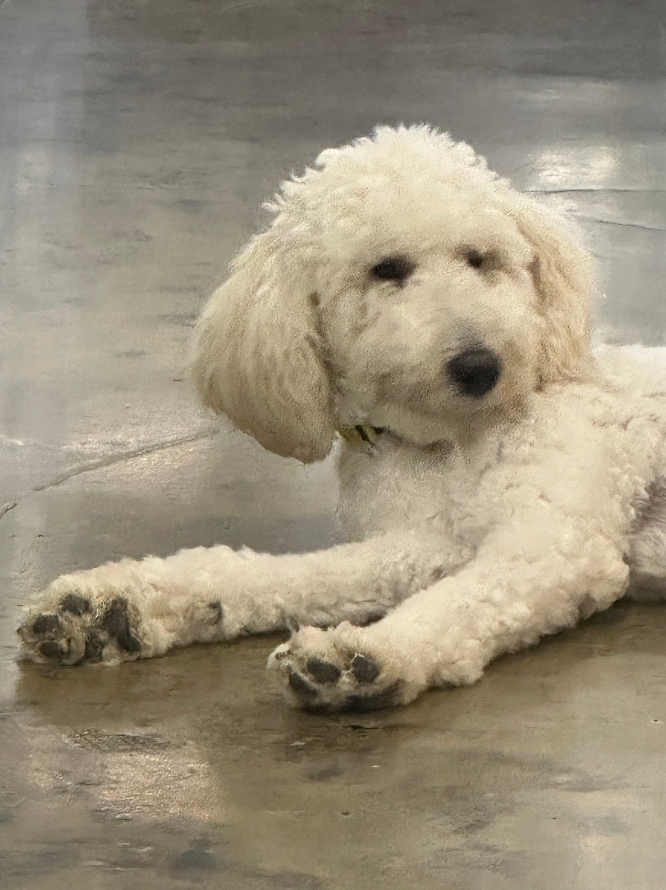
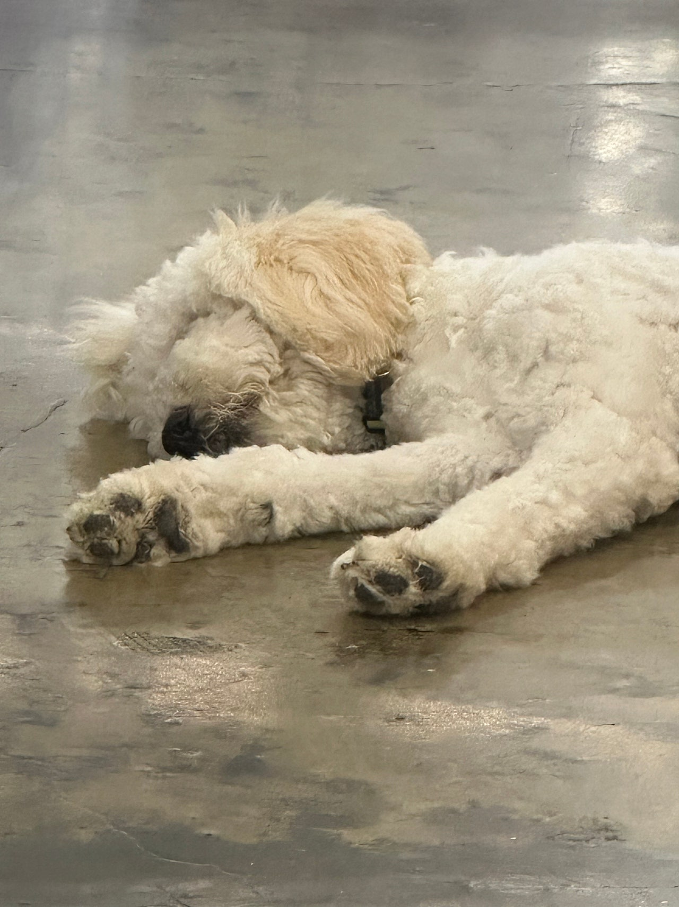

산책후 뻗은 머랭쓰,,
스탠다드푸들 머랭이의 산책
ㅋㅋㅋㅋㅋㅋㅋㅋㅋㅋㅋㅋㅋㅋ웃겨죽겠네 ㅋㅋㅋㅋㅋㅋㅋㅋ산책후 힘든지 맨바닥에 뻗어있는 머랭,,ㅋㅋㅋㅋㅋㅋㅋㅋㅋ아 ㅋㅋㅋㅋㅋㅋㅋ저 철푸덕 있는 모습하며머랭아! 이불에 가서 자! 하니까귀찮은듯 고개만 들고 쳐다보는 표정하며 ㅋㅋㅋㅋㅋ매력터지는 머랭이 ㅠㅠ아니 왜 이불을 깔아줘도 맨바닥에서 잘까요..???알다가도 모를 강아지들의 세계..ㅋㅋㅋ


스탠다드푸들 머랭이의 산책


댓글 27
이불은 거절하고 바닥을 택한 머랭, 글이 정확해요.
산책이 얼마나 신났으면 저렇게 쓰러지나 싶어요.
좋은 인연이 빨리 나타났으면.
알다가도 모를 강아지 세계라는 마무리가 이 컷에 잘 붙어요.
산책 후 휴식이 맨바닥인 머랭, 가족도 이 점을 알게 될 거예요.
머랭, 빨리 좋은 가족 만나면 좋겠어요.
철푸덕 자세가 이 글의 전부인데, 그게 매력이라는 말에 동의해요.
산책 끝나고 맨바닥에 뻗은 머랭, 제목이 사진이랑 똑같아요.
댓글로나마 쓰다듬고 갑니다. 잘 자라.
이불 권유를 무시하는 눈이 글이랑 같아요.
머랭아 이불에 가, 하는 소리가 들릴 것 같은 글이에요.
좋은 가족만 만나자.
이불에 가서 자라고 했더니 고개만 든다는 장면이 보여요.
머랭쓰, 제목의 쉼표까지 이 사진 분위기예요.
건강한 모습 그대로 가족 만나길.
고개만 들고 보는 그 한 컷 때문에 글을 다 읽었어요.
웃기려고 찍은 게 아니라 진짜 뻗은 것 같아서 더 웃겨요.
머랭, 좋은 가족 만나.
매력 터진다는 표현이 뻗은 자세랑 어울려요.
철푸덕 머랭 보고 댓글이 웃음으로 시작됐어요.
머랭, 기다리는 동안도 건강히.
왜 이불을 깔아 줘도 맨바닥에서 자냐는 질문에서 웃었어요.
머랭, 산책 후 배터리 방전 장면이 제일 웃겨요.
가족 되는 날이 하루라도 빨리 오면 좋겠어요.
맨바닥 고수라는 점이 사진에서 바로 읽혀요.
귀찮은 듯 쳐다보는 표정이 글에 적힌 그 얼굴 같아요.
아프지 말고, 밥 잘 먹고, 잘 자라.